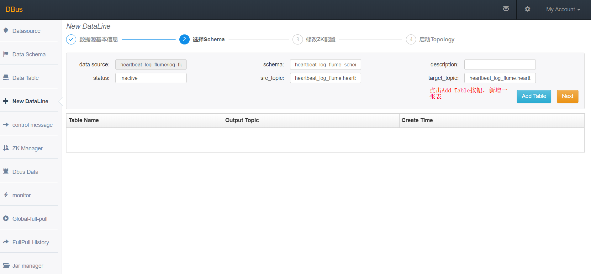
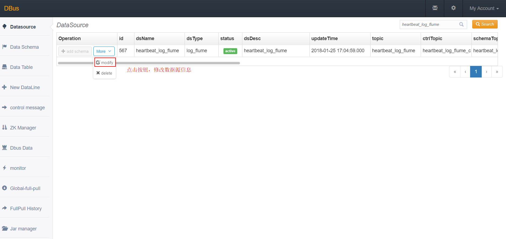

flume作为数据源接入DBus
系统架构：

总体说明：
DBus可以接入三种数据源：logstash、flume、filebeat，下面以使用flume为数据抽取端，抽取DBus自身产生的监控和报警日志数据。DBus监控和报警模块部署在 dbus-n2和dbus-n3 上，路径为：/app/dbus/dbus-heartbeat-0.4.0/logs/heartbeat/heartbeat.log。因此，flume的日志数据抽取端也要部署在dbus-n2和dbus-n3 上。
另外与logtash不同，flume需要一个额外的产生心跳数据的shell脚本，由crontab负责执行，输出的日志路径为：/app/dbus/dbus-agent-heartbeat/logs/agent-heartbeat.log，用于监测整条链路是否正常工作。因此，产生心跳数据的shell脚本也要部署在dbus-n2和dbus-n3 上。
flume抽取程序同时监控DBus自身的监控和报警日志（路径：/app/dbus/dbus-heartbeat-0.4.0/logs/heartbeat/heartbeat.log） 和shell脚本产生的心跳数据（路径：/app/dbus/dbus-agent-heartbeat/logs/agent-heartbeat.log），这样，flume既可以抽取数据日志，也可以抽取心跳日志。
| No | 域名 | 是否有监控和报警日志？ | 是否部署flume？ | 是否部署心跳shell脚本？ | 抽取日志 | 输出topic |
|---|---|---|---|---|---|---|
| 1 | dbus-n1 | 否 | 否 | 否 | 无 | 无 |
| 2 | dbus-n2 | 是 | 是 | 是 | 1.DBus自身产生的监控和报警日志 2. shell脚本产生的心跳数据 | heartbeat_log_flume |
| 3 | dbus-n3 | 是 | 是 | 是 | 1.DBus自身产生的监控和报警日志 2. shell脚本产生的心跳数据 | heartbeat_log_flume |
主要配置步骤：
1 配置 和 安装flume源相关
2 一键加线和配置
3 检验结果
1 配置和安装flume源相关
监控和报警日志在dbus-n2和dbus-n3上，因此 flume的日志数据抽取端也要部署在dbus-n2和dbus-n3 上。
1.1 flume安装
-
flume版本 DBus使用的flume的版本是v1.8.0。
-
下载
-
flume目录说明
-
flume目录

conf目录：用于放置flume的配置文件，例如被抽取文件路径及输出端kafka等配置信息。
data目录 : DBus自己新建的目录，需要手动创建data/flume_data/taildir等目录，在taildir目录下存放了flume读取文件的路径、inode信息及文件offset等信息。
logs目录：放置flume产生的日志，建议将日志放置在一个磁盘较大的目录，这里为其建立一个软连接，指向/data/dbus/flume-logs目录。
-
1.2 配置文件说明
在conf目录下，有flume的配置文件：flume-conf.properties，下面说下其配置要点。详细配置请参考flume配置文件：参考链接。
# 有两个源一个是数据源， 一个是心跳源
agent.sources=r_hb_0 r_dahb
agent.channels=c
agent.sinks=k
#1 以下为数据配置
agent.sources.r_hb_0.type=TAILDIR
agent.sources.r_hb_0.channels=c
# kafka key 为时间戳
agent.sources.r_hb_0.interceptors=i_ts i_sr_0 i_sr_1 i_sr_2
agent.sources.r_hb_0.interceptors.i_ts.type=timestamp
agent.sources.r_hb_0.interceptors.i_ts.preserveExisting=false
agent.sources.r_hb_0.interceptors.i_ts.headerName=key
# 将数据内容\,替换\\
agent.sources.r_hb_0.interceptors.i_sr_0.type=search_replace
agent.sources.r_hb_0.interceptors.i_sr_0.searchPattern=(\\\\)
agent.sources.r_hb_0.interceptors.i_sr_0.replaceString=\\\\\\\\
# 将数据内容转义,替换双引号
agent.sources.r_hb_0.interceptors.i_sr_1.type=search_replace
agent.sources.r_hb_0.interceptors.i_sr_1.searchPattern=(\")
agent.sources.r_hb_0.interceptors.i_sr_1.replaceString=\\\\\"
# 构造为json, 注意修改host部分， agent.sources.r_hb_0.interceptors.i_sr_2.replaceString中的host需要保持和心跳产生的host一致！！
agent.sources.r_hb_0.interceptors.i_sr_2.type=search_replace
#agent.sources.r_hb_0.interceptors.i_sr_2.searchPattern=^([^\{].*)
agent.sources.r_hb_0.interceptors.i_sr_2.searchPattern=(^.*$)
agent.sources.r_hb_0.interceptors.i_sr_2.replaceString={\"message\":\"$1\", \"type\":\"dbus_log\", \"host\":\"dbus-n2\"}
#sincedb 保存了读取数据源的文件的路径、inode信息及文件offset等信息。
agent.sources.r_hb_0.positionFile=/app/dbus/apache-flume-1.8.0-bin/data/flume_data/taildir/hb_0_taildir_position.json
# 被读取文件位置，如果想读取所有以.log结尾的文件，需要以.*log配置，以.log配置不生效
agent.sources.r_hb_0.filegroups=hblf
agent.sources.r_hb_0.filegroups.hblf=/app/dbus/dbus-heartbeat-0.4.0/logs/heartbeat/.*log
#2 以下为心跳源配置
agent.sources.r_dahb.type=TAILDIR
agent.sources.r_dahb.channels=c
agent.sources.r_dahb.interceptors=i_ts
agent.sources.r_dahb.interceptors.i_ts.type=timestamp
agent.sources.r_dahb.interceptors.i_ts.preserveExisting=false
agent.sources.r_dahb.interceptors.i_ts.headerName=key
agent.sources.r_dahb.positionFile=/app/dbus/apache-flume-1.8.0-bin/data/flume_data/taildir/dahb_taildir_position.json
agent.sources.r_dahb.filegroups=dahblf
#flume读取的产生心跳包的路径
agent.sources.r_dahb.filegroups.dahblf=/app/dbus/dbus-agent-heartbeat/logs/agent-heartbeat.log
agent.channels.c.type=memory
agent.channels.c.capacity=20000
agent.channels.c.transactionCapacity=20000
agent.channels.c.keep-alive=30
agent.sinks.k.channel=c
agent.sinks.k.type=org.apache.flume.sink.kafka.KafkaSink
#输出到kafka的topic
agent.sinks.k.kafka.topic=heartbeat_log_flume
agent.sinks.k.kafka.key=key
agent.sinks.k.kafka.bootstrap.servers=dbus-n1:9092,dbus-n2:9092,dbus-n3:9092
agent.sinks.k.kafka.flumeBatchSize=20
agent.sinks.k.kafka.producer.acks=1
agent.sinks.k.kafka.producer.retries=3
agent.sinks.k.kafka.producer.linger.ms=1000
agent.sinks.k.kafka.producer.batch.size=1048576
agent.sinks.k.kafka.producer.max.request.size=10485760
agent.sinks.k.kafka.producer.buffer.memory=67108864
1.3. flume启动和验证
- 在flume解压目录下，进入bin目录（必须进入bin目录执行以下命令!），执行命令：
1. 前台启动方式：./flume-ng agent --conf ../conf --conf-file ../conf/flume-conf.properties --name agent -Dflume.log.dir=/app/dbus/apache-flume-1.8.0-bin/logs -Dflume.log.file=flume.log -Dflume.root.logger=INFO,LOGFILE
2. 后台启动方式：./flume-ng agent --conf ../conf --conf-file ../conf/flume-conf.properties --name agent -Dflume.log.dir=/app/dbus/apache-flume-1.8.0-bin/logs -Dflume.log.file=flume.log -Dflume.root.logger=INFO,LOGFILE &
- 当采用前台启动方式时，出现类似以下信息，则说明启动成功（注意控制台是否出现报错信息）：
Info: Sourcing environment configuration script /app/dbus/apache-flume-1.8.0-bin/conf/flume-env.sh
Info: Including Hive libraries found via () for Hive access
+ exec /usr/java/latest/bin/java -Xms1024m -Xmx1024m -Dflume.log.dir=/app/dbus/apache-flume-1.8.0-bin/logs -Dflume.log.file=flume.log -Dflume.root.logger=INFO,LOGFILE -cp '/app/dbus/apache-flume-1.8.0-bin/conf:/app/dbus/apache-flume-1.8.0-bin/lib/*:/lib/*' -Djava.library.path= org.apache.flume.node.Application --conf-file ../conf/flume-conf.properties --name agent
读取kafka的topic：heartbeat_log_flume，确认是否有数据：
-
进入kafka安装目录。
-
执行以下命令，查看数据，如果有数据，则说明flume可以成功抽取文件：
bin/kafka-console-consumer.sh --zookeeper dbus-n1:2181,dbus-n2:2181,dbus-n3:2181/kafka --topic heartbeat_log_flume -
flume的心跳数据样例：
{ "host": "dbus-n2", "@version": "1", "clock": 1516862401, "@timestamp": "2018-01-25 14:40:02.998", "type": "dbus-heartbeat" } -
flume抽取之后产生的数据样例：
{ "message": "[main-EventThread] INFO : 2018/01/25 16:39:32.856 WatcherType 127 - [command-control] 开始重新加载配置信息.", "type": "dbus_log", "host": "dbus-n2" }
1.4. 心跳脚本和crontab说明
DBus提供了心跳shell脚本点击下载，用于每60s产生一次json格式的心跳数据，flume可对心跳数据文件进行提取，进而实现了和logstash定时产生心跳数据一样的功能。
- 心跳脚本目录

agent-heartbeat.sh: 产生心跳的脚本，通过crontab定时运行该脚本，可以实现每60s产生一个心跳数据。
logs: 该目录下存在心跳脚本产生的心跳数据，当用crontab启动agent-heartbeat.sh后，就可以在该目录下发现一个agent-heartbeat.log的文件，flume通过抽取该文件，就可以产生定时心跳数据的功能。
read.me: 说明了crontab启动该脚本的命令，将read.me内容直接复制到crontab中即可。
-
心跳脚本说明（有注意项！！）
# !/bin/sh # 注意！！！ 这里的HOST应该与flume配置文件中的host需一致，即如果flume中配置的是ip，则此处也应该配置ip（即下面一行不需要注释），如果flume中配置的是域名，则此处也需要用域名（即下面一行不需要注释），此处样例用的是域名。 # HOST=`ifconfig | sed '6,$d' | sed -n '/inet addr/s/^[^:]*:\([0-9.]\{7,15\}\) .*/\1/p'`
if test -z ${HOST}
then
HOST=hostname
fi
CLOCK=date "+%s"
NS=date "+%N"
MS=expr $NS / 1000000
while test ${#MS} -lt 3
do
MS=”0$MS”
done
TIMESTAMP=date "+%Y-%m-%d %H:%M:%S"”.$MS”
PACKET=”{"host": "$HOST", "@version": "1", "clock": $CLOCK, "@timestamp": "$TIMESTAMP", "type": "dbus-heartbeat"}”
BASE_DIR=$(cd dirname $0; pwd)/logs
DAY=date "+%d"
PRE_YMD=tail -n 1 "$BASE_DIR"/agent-heartbeat.log | awk -F , '{print $4}' | awk -F ": " '{print $2}' | awk '{print $1}'
PRE_YMD=${PRE_YMD//"/}
PRE_DAY=echo $PRE_YMD | awk -F "-" '{print $3}'
if test -n ${PRE_DAY} then if test ${DAY} -ne ${PRE_DAY} then mv agent-heartbeat.log agent-heartbeat.log”$PRE_YMD” fi fi
echo $PACKET » “$BASE_DIR”/agent-heartbeat.log
if test $? -ne 0 then echo “add packet failed” » “$BASE_DIR”/agent-error.log fi
### 1.5 验证flume配置成功
**读取kafka的heartbeat_log_flume，确认是否有数据：**
- **进入kafka安装目录。**
- **执行以下命令，查看数据，如果有数据，则说明flume可以成功抽取文件：**
`bin/kafka-console-consumer.sh --zookeeper dbus-n1:2181,dbus-n2:2181,dbus-n3:2181/kafka --topic heartbeat_log_flume`
- **flume的心跳数据样例：**
```json
{
"host": "dbus-n2",
"@version": "1",
"clock": 1516862401,
"@timestamp": "2018-01-25 14:40:02.998",
"type": "dbus-heartbeat"
}
-
flume抽取之后产生的数据样例：
{ "message": "[main-EventThread] INFO : 2018/01/25 16:39:32.856 WatcherType 127 - [command-control] 开始重新加载配置信息.", "type": "dbus_log", "host": "dbus-n2" }
2 DBus 一键加线和配置
2.1 DBus一键加线
flume将数据抽取到Kafka topic后，dbus log_processor程序就可以对该topic数据进行处理了，在dbus-web进行数据源和table的配置工作。
-
**新建数据源 : ** 首先新建数据源，进入New DataLine页面，由于我们是用flume对心跳日志进行抽取，因此数据源的名字可以起的有意义一些，Type选择log_flume，topic必须和flume配置文件中的topic一致。

-
**新增表 : **点击Add Table按钮，新增一张表，稍后会对该表进行规则配置，新增完后，点击Next。


-
**clone模板，生成配置信息 : **每个数据源都会起一个storm程序，每个程序都会在zookeeper上存放一些配置信息，通过模板clone，为每个数据源生成一份自己的配置信息。

-
启动log_processor程序：启动storm程序，对数据进行处理，后面会对新增表进行规则配置。
 启动结果：点击启动按钮后，当Status变为running后，表示启动成功，如果启动不成功，可以通过查看Topology start log定位失败原因。
启动结果：点击启动按钮后，当Status变为running后，表示启动成功，如果启动不成功，可以通过查看Topology start log定位失败原因。

2.2 数据源配置修改
因为我们在dbus-n1和dbus-n2两台机器中分别配置了flume程序，用于对数据进行抽取，而DBus监控和报警模块会对来自这两台机器的数据流进行监控，因此，我们需要在数据源配置信息中，将多台主机的host信息填入dsPartition选项中，供DBus监控和报警模块使用，注意：如果主机的hostname是ip，请将”.”转换为”_“，例如：127.0.0.1应该要转换为127_0_0_1。
-
修改数据源信息：点击modify按钮进行修改。 
该数据源的数据可能来自于多个主机上的flume程序，要在dsPartition中，配置上所有主机的host信息，为DBus 心跳监控及报警程序使用。

2.3 配置规则
-
进入Data Table页面，查看新增加的表，点击Rules按钮，为该表配置规则，详细配置方式请参考详：(config-table.md。

-
新增规则组：点击Add group按钮，新增一个规则组。

- 点击规则组名字，进入规则配置页面。

-
配置规则: topic是在flume中配置的topic，即源topic，可以指定offset，获取固定区间的数据，然后点击show data按钮，此时会在页面下方显示原始数据，点击Add，新增一些过滤规则，对数据进行处理。配置完规则后，查看过滤出的数据，保存规则，并返回到规则组页面。

-
升级版本：首先使规则组的Status状态变为active，然后点击升级版本（每次增加、删除或修改规则组后，都应该对该表升一次版本）。

-
**拉取增量 : ** 使该表的状态变为ok。

-
使表生效： 点击Take Effect生效按钮，使该表生效（当后续再对该表进行规则组配置操作后，也应该对该表再执行Take Effect生效按钮，使该表能够获取到最新的规则配置）。

3 grafana配置与流量监控
- **上传grafana配置文件参考链接 ： **点击Import，上传grafana json配置文件。

-
选择InDB数据库：ds的名字必须与新建数据线中的数据源名字一致。

- 之前新增表的流量监控信息，type表示来自于哪台主机的数据

- _unknown_table_表示不满足任何表的数据